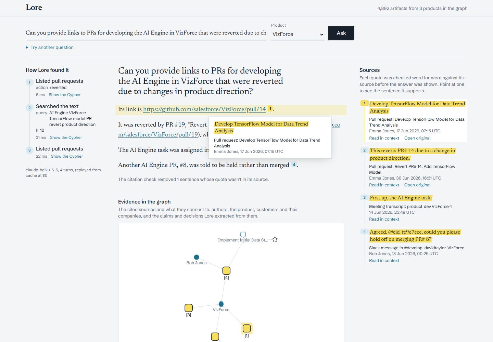
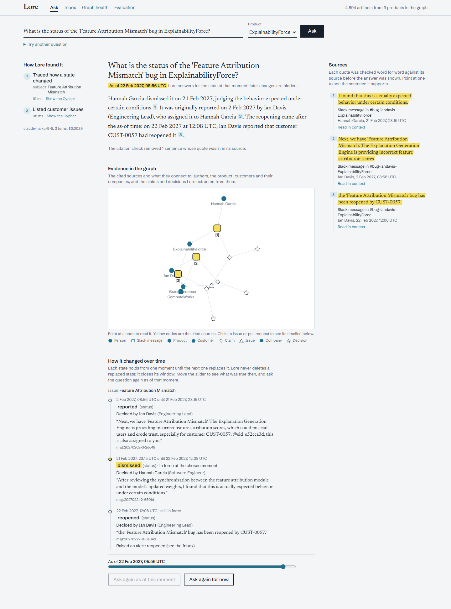
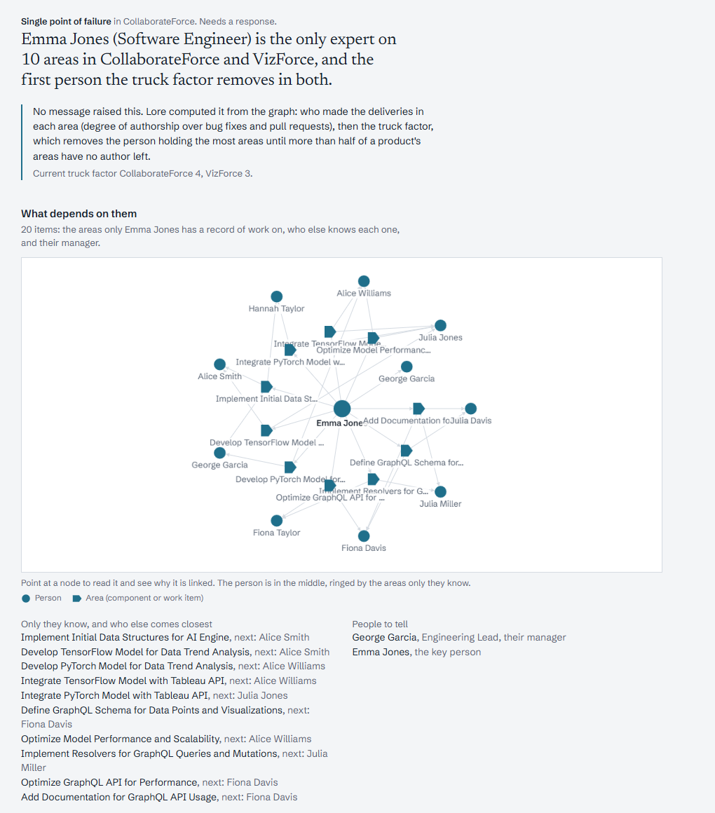
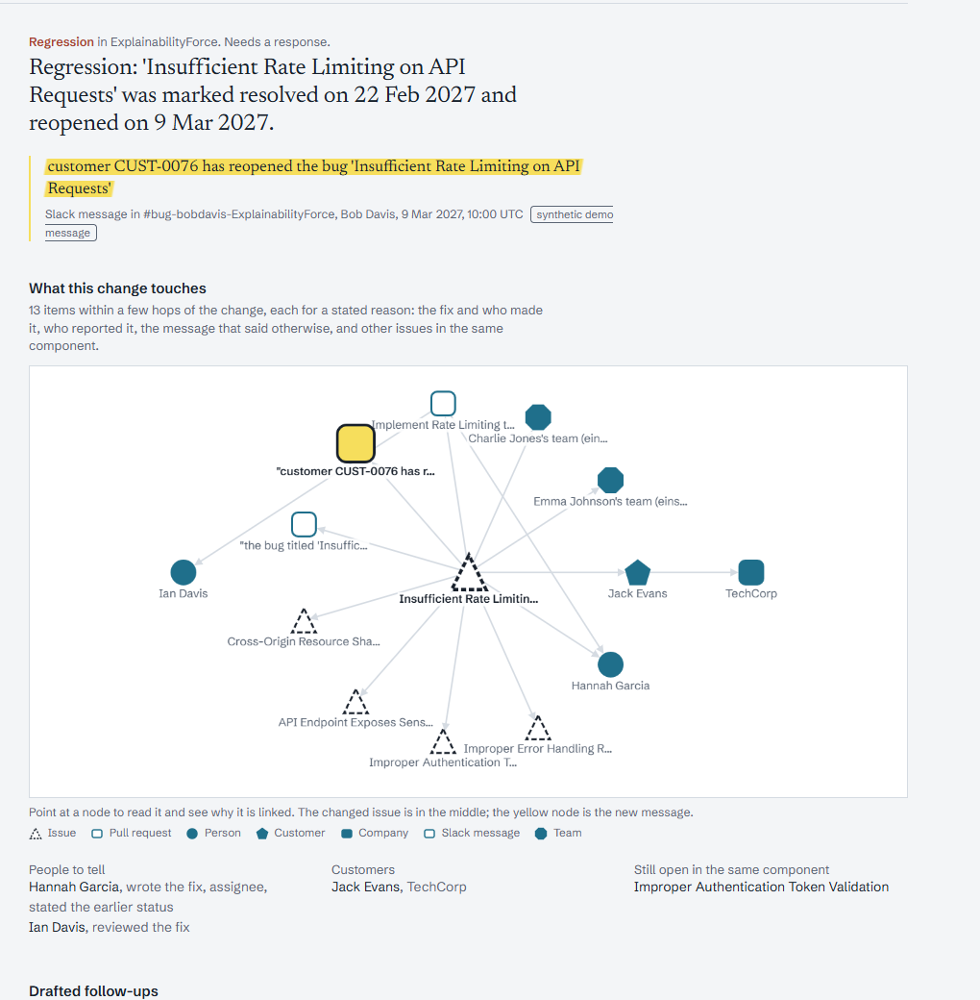
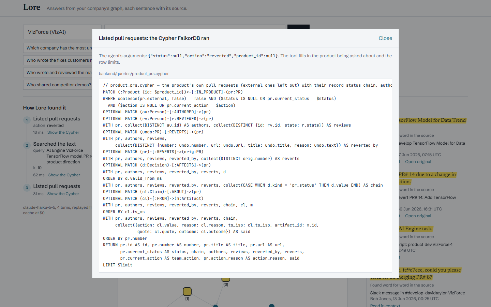
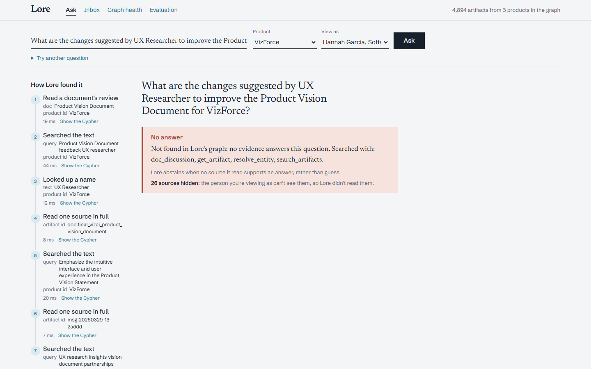

“Yes, it has been resolved.”
Top match it trusted
the bug titled ‘Inefficient Caching Strategy’ has been resolved.
Right only between 24 and 26 Feb. On every other day it is wrong.
Open source, self-hostedPowered by
Yaan turns your team’s Slack, meetings, pull requests, tickets and docs into a time-aware graph of people, work and decisions. Ask what’s true now, what was true then, why, and who knows, with a word-for-word source for every sentence.
How Yaan found it
Answer
Sources, checked word for word
Replayed from Yaan’s tool output on ExplainabilityForce, a synthetic company from Salesforce AI Research’s enterprise benchmark (the HERB paper). Tool times are the measured p50 per tool.
Connects to where your team already talks, ships and writes.
Three steps, one pipeline. Every source goes through the same path, so an answer about a Slack thread and an answer about a pull request rest on the same graph.
Slack, GitHub, Jira and Notion stream in. Every message, PR, ticket and page goes through the same pipeline.
Each change becomes a decision with a start and end date, who made it and the quote that proves it. Nothing is deleted: old facts get an end date.
Ask from Claude Code, Codex, Cursor or Slack. When new talk contradicts a decision, Yaan raises an alert with its blast radius and a drafted fix. One click on Approve posts it back to Jira and GitHub.
38,535 nodes 96,047 edges, one graph
Issue Inefficient Caching Strategy
Nothing is deleted. A new fact closes the old one’s window and both stay in the graph, so “what was true on 25 Feb?” is one lookup.
Claude Code ~/acme
> anything break overnight?
yaan · open_alerts (MCP) 12 ms
One regression. ‘Inefficient Caching Strategy’ was marked resolved on 24 Feb 2027 and reopened on 26 Feb 2027.
Yaan drafted a follow-up for the Jira ticket and PR #53, quoting Bob Davis: “the customer has reopened the bug titled ‘Inefficient Caching Strategy’”
› anything break overnight?
• Called yaan.open_alerts({})
└ 1 open alert · 12 ms
One regression. ‘Inefficient Caching Strategy’ was marked resolved on 24 Feb 2027 and reopened on 26 Feb 2027.
Drafted follow-up for Jira and PR #53, quoting Bob Davis: “the customer has reopened the bug titled ‘Inefficient Caching Strategy’”
anything break overnight?
✓Called MCP tool open_alertsyaan
One regression. ‘Inefficient Caching Strategy’ was marked resolved on 24 Feb 2027 and reopened on 26 Feb 2027.
Yaan drafted a follow-up for Jira and PR #53, quoting Bob Davis: “the customer has reopened the bug titled ‘Inefficient Caching Strategy’”
Pick your client: Claude Code, Codex or Cursor see the same alerts over MCP. Approve lands in the Yaan inbox or Slack.
Connectors for Slack, GitHub, Jira, Notion and eight more tools, plus an MCP server for any AI agent.
Connect it to Yaan over MCP and ask from where you already work. Your AI does the talking; Yaan’s graph tools hand it the facts, each with its source, and those graph lookups cost no AI tokens on Yaan’s side.
Yaan runs on your own servers. Your company’s knowledge stays inside your network, and every line of code that touches it is open to read: all 166 graph queries are plain files, each with a test. Licensed under Apache-2.0.
Messages, pull requests and tickets land in a graph on your own disk. Nothing leaves except calls to the AI model you pick.
Yaan and its database listen only inside your network, and every tool is reached over an outgoing connection. No open ports, no public URL.
Generated queries run as a read-only database user with a time limit, and a person approves every action before it posts.
Your own Anthropic key under a hard daily cap, or your team’s Claude, Codex or Cursor subscription over MCP. Graph lookups are free.
Standard Cypher on FalkorDB. Dump the whole graph to one file and restore it on any machine.
Scored on Salesforce AI Research’s enterprise benchmark, from their HERB paper (EMNLP 2025): 399 questions from 7 products we never looked at while building, run once. Yaan runs on Claude Haiku 5.5.
| System | Avg score, held-out | Customer questions | Quotes verified | Avg on the 3 dev products we built on |
|---|---|---|---|---|
| Yaan | 63.6 | 54.2 | 100% | 83.2 |
| Salesforce AI Research agent (GPT-4o) best agent in their HERB paper; different setup | 43.4 | n/a | n/a | n/a |
| Yaan without the FalkorDB graph* | 24.2 | 0.0 | 100% | 25.0 |
| Plain RAG | 9.6 | 0.0 | 98.5% | 14.7 |
Yaan scores lower on products it has never seen (63.6) than on the ones it was built on (83.2). We report both. Scores are judged answers out of 100, not accuracy. *The same agent with search and read only: it keeps the vector and full-text search, and loses every graph query. Stale answers, on 24 hand-labeled questions about status now and on a past date: plain RAG 6.7%, search only 8.7%, Yaan 0%. Method and footnotes in eval/report.md.
Company knowledge goes stale. Statuses change, decisions get reversed, owners move on. A search-and-summarize assistant quotes whatever matched, even if it was overturned last week.
Same question to both Is the ‘Inefficient Caching Strategy’ bug resolved?
Asked as of 6 Mar 2027
Drag to ask on another day. Search has no clock, so its answer never moves.
“Yes, it has been resolved.”
Top match it trusted
the bug titled ‘Inefficient Caching Strategy’ has been resolved.
Right only between 24 and 26 Feb. On every other day it is wrong.
Stale answers on our drift test, built on Salesforce AI Research’s enterprise data
Screens from Yaan’s web app, running on Salesforce AI Research’s synthetic enterprise data (from their HERB paper). Pick one to look closer.






Yaan’s answers live in the links between people, work and decisions, so the engine that holds those links decides how fast, and how right, an answer is. Yaan runs on FalkorDB: the Rust-based, in-memory graph database on Redis that stores adjacency as sparse matrices and runs traversals as linear algebra.
Rust-based
What Yaan stands on
Point at a layer to see what Yaan uses it for.
| Algorithm | FalkorDB | Neo4j |
|---|---|---|
| PageRank Yaan ranks who connects teams with it | 18.5 ms | 417.3 ms |
| Weakly connected components | 17.8 ms | 1,324.3 ms |
Source: falkordb.com and benchmark.falkordb.com. Their numbers, their setup; ours are the two marked “Measured by us”.